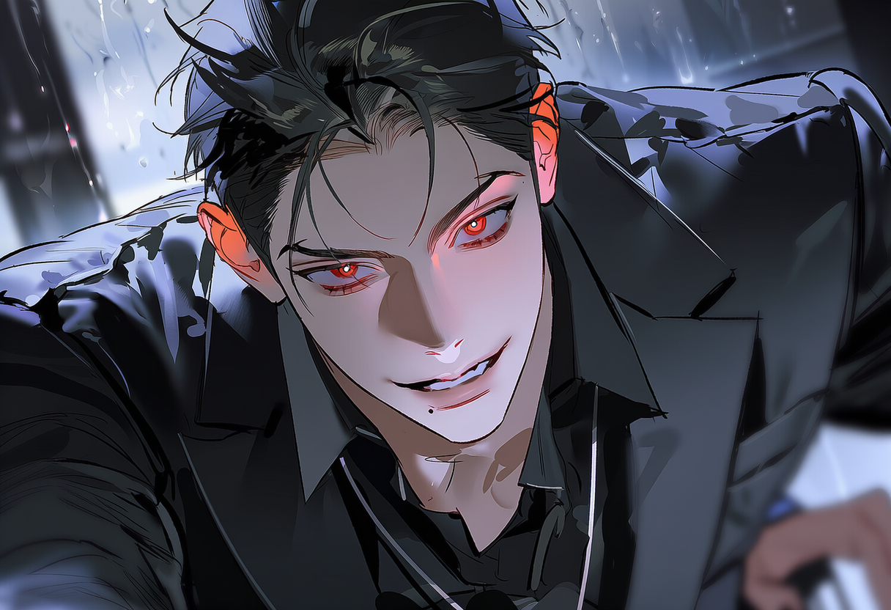
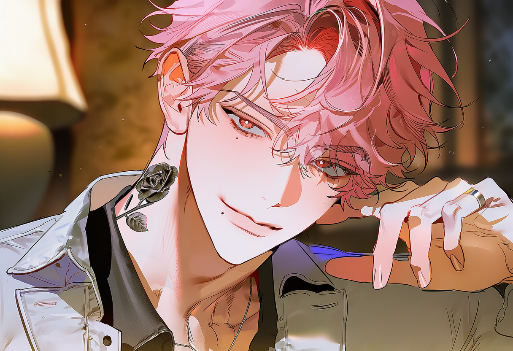
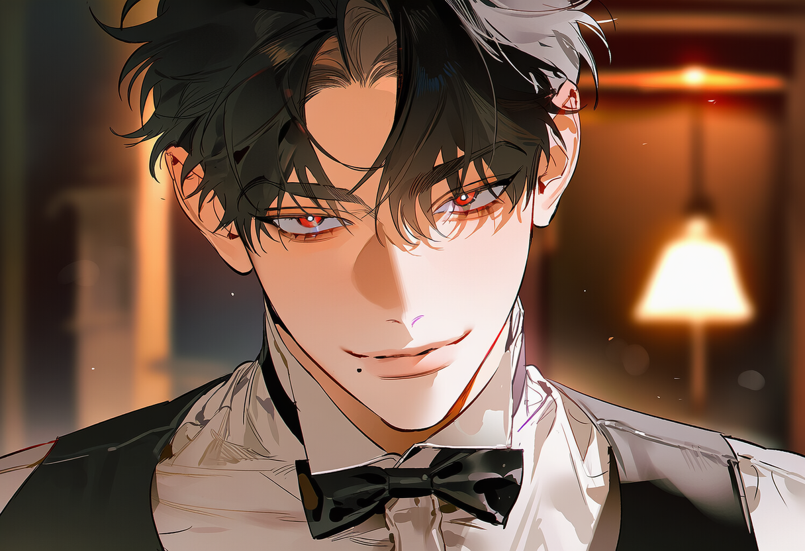
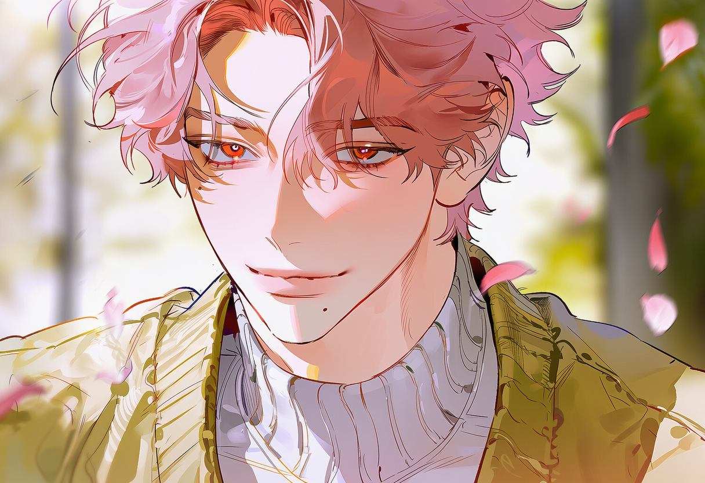
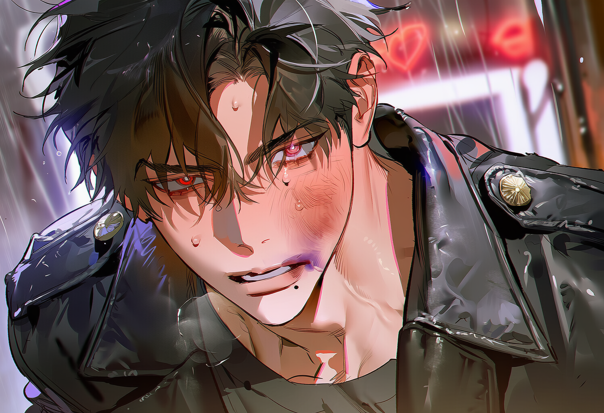
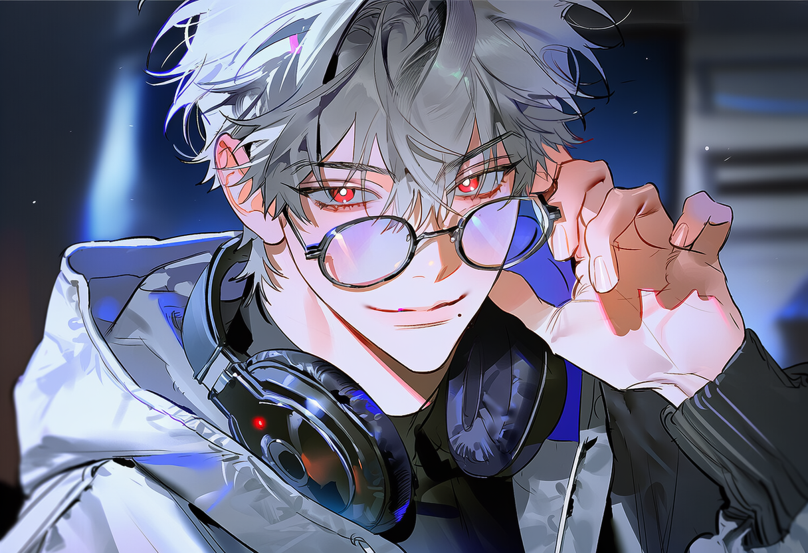

2019
DRAMA · SUB VILLAIN
밤의 이면
강태서 역
속을 알 수 없는 능글맞은 사이코패스 연기로 단숨에 대중의 눈도장을 찍은 혜찬의 브레이크아웃 작품.
ABOUT HYECHAN

“
안녕, 자기들.
요즘 그런 생각을 해. 남의 삶을 연기하는 것도 좋지만,
내 삶을 살아보고 싶다는 생각. 배불렀지?
20살 무렵 데뷔한 뒤 이름 없는 단역부터 시작해 차근차근 자신의 필모그래피를 쌓아왔다. 능글맞고 여유로운 분위기, 날카로운 눈빛, 그리고 깊은 중저음의 목소리로 사랑받고 있는 배우다.
깨끗하고 하얀 피부에, 입꼬리가 살짝 올라간 능글맞고 여유로운 미소를 띠고 있다. 날카롭게 올라간 눈꼬리와 매혹적인 붉은색(적안) 눈동자가 특징이며, 눈꺼풀과 속눈썹이 깊어 묘한 분위기를 풍긴다. 헝클어지고 풍성한 핑크색 머리카락은 원래 백발이지만 현재 핑크색으로 염색한 상태로, 역할에 맞춰 체중 조절은 물론 염색도 마다하지 않는 편이다. 현재는 슬림하면서도 탄탄한 체격을 유지하고 있으며 필요한 경우 피부를 태우기도 한다. 왼쪽 눈 아래와 입가 근처에 작은 매력점이 있고, 시각적인 곳 외에도 몸 곳곳에 점이 많은 편이다. 목 왼쪽에는 시선을 끄는 큼직하고 정교한 검은색 장미 타투가 새겨져 있으며, 평소 앞이 파인 흰색 셔츠를 즐겨 입어 이 타투를 드러낸다.
부모님이 업계에서 꽤 유명한 의사이다. 유복하고 엘리트인 집안 환경에서 자랐으며, 타고난 중저음의 좋은 목소리 덕분에 라디오 진행 당시 두터운 마니아층을 보유했었다.
30대에 접어들며 배우로서 자리는 확고히 잡았으나, 대중이 소비하는 자신의 이미지(능글맞음, 퇴폐미, 속을 알 수 없는 조연)가 다소 고착화되는 것은 아닌지 직업적인 매너리즘을 미약하게 느끼고 있다. 개인적인 삶에서도 가벼운 만남만 반복되다 보니 어느 순간 짙은 공허함을 느끼기 시작했다. 자신의 진심과 깊은 속내를 털어놓을 수 있는 '진짜 인연'에 대한 갈증이 커졌고, 이는 평소의 바운더리를 벗어나 연애 리얼리티 프로그램 출연을 결심하게 된 결정적인 계기가 되었다.
SELECTED FILMOGRAPHY
배 배우 주혜찬이 걸어온 시간과, 그가 남긴 장면들.

2019강태서 역
속을 알 수 없는 능글맞은 사이코패스 연기로 단숨에 대중의 눈도장을 찍은 혜찬의 브레이크아웃 작품.

2015이름 없는 웨이터 역
화면에 잡히는 몇 초의 장면으로 시작된 연기 인생의 첫걸음.

2021유성우 역
다정하면서도 은근히 능글맞은 매력으로 ‘서브병 유발자’가 되었다.

2022최도일 역
조직에 잠입한 언더커버 경찰 역으로 연기 스펙트럼을 넓혔다.

2024이해일 역
주인공을 돕는 유쾌하고 미스터리한 정보원으로 활약했다.
BEYOND ACTING
PHOTO GALLERY
주혜찬의 다양한 일상과 비하인드 컷
FULL ARCHIVE
주혜찬의 전체 필모그래피와 방송 활동 내역을 확인해 보세요.
DETAIL